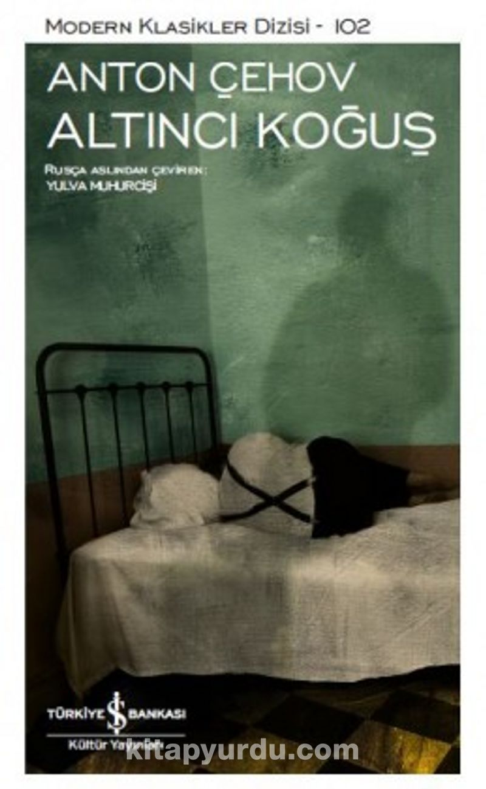

İNCİNMİŞLERDİR, DAHA GELİŞMİŞ OLANLARDIR.
Anton Çehov, Rus edebiyatının yapıtaşlarından olmakla beraber modern öykünün de ustaları arasında sayılmaktadır. Puşkin ödülünü de kazanmış olan yazar Altıncı Koğuş, Alacakaranlıkta gibi güzel öyküler yazmış, aynı zamanda da bir çok tiyatro oyununun sahnelenmesine vesile olmuştur.
Bir kasabanın Akıl hastanesinde geçen doktor ve hasta arasındaki müthiş felsefi diyaloglarla bezenmiş bir eser. Yine yeniden doğruyu söyleyen "hasta" bir deli karakteri, ve bu diyaloğlar yaşanırken söylenen sözleri beden dilinde hayal ettiğim bir karakter oldu.
Hastanın kendisini takip edenlerin olduğunu düşünüp paranoyakça hareketler yapmasına neden olan sebepleri ve akabinde hastanede doktorla yapılan felsefi konuşmalar çok etkilieyici.
Haksızlık ve adaletsizlik karşısında konuştuğumuzda deli ilan edildiğimiz bir toplum tahayyül etmemize gerek bile olmayan bir düzende yaşadığımızı düşününce okunması gereken bir kitap olarak tavsiye ederim..
Kitabı incelemeye bu kez farklı bir yönden merak ve düşünceyle başladım. "Altıncı koğuş" "altıncı his" nedir bu 6 ? Spiritüalizmde neyi temsil etmektedir. Bilinçli ya da bilinçdışı bu seçimin bir anlamı olabilir mi ?
6 yaratıcı insanların sayısı. 6 bu dünyada kendini arayan insanlara bir yardımcıdır. Kitaptaki karakterlere baktığımda akıl hastası olan Ivan Dmiyriyeviç ve Doktor Andrey Yefimoviç hayata çok farklı açılardan bakan, sürekli zıt tartışmalar içinde olsalar da ortak noktaları kendilerini yaşadıkları insanların arasında yalnız hisseden, toplumdan farklı düşüncelere sahip olan, kendini arayan, sorgulayan ancak bu sorgulamanın bunalımına düşmüş insanlar. Buluşma mekanlarıysa 6. Koğuş oluyor.
Kitap çok kısa olmasına rağmen sindirerek, üzerine düşünülerek okunması gerekiyor. Doktor ve akıl hastasının çoğu zaman zıtlaşarak tartıştıkları özellikle insan yaratılışı ile ilgili konuşmalar çok etkileyici. İnsanlara dair öylesine derin tespitler var ki. Mutlaka okunması gereken bir başyapıt. Rus edebiyatı yine şaşırtmadı.